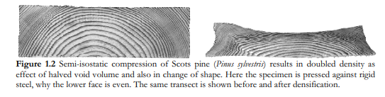
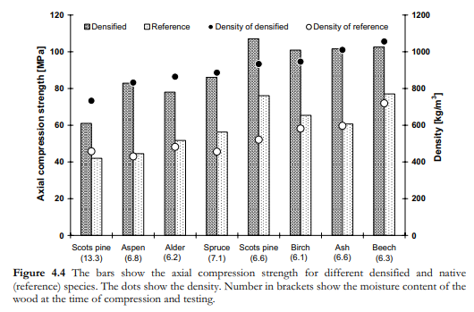
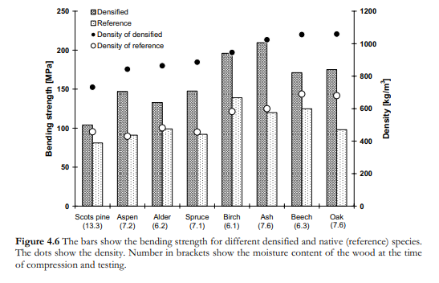
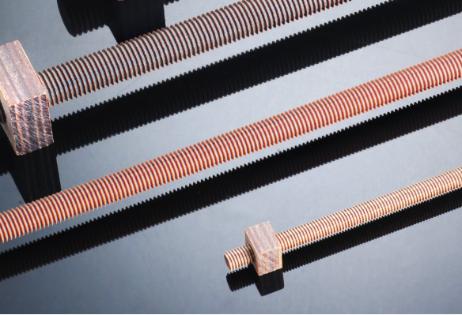

An engineered wood product I didn’t know existed: Densified Wood.
Densified wood is exactly what it sounds like, wood that has been compressed via mechanical or chemical means, giving it higher strength.
From ‘Structure and Properties Relationships of Densified Wood’ >Wood with inadequate mechanical properties can be modified by various combinations of compressive, thermal and chemical treatments. It can be densified by impregnating its void volume with polymers, molten natural resins, waxes, sulfur, and even molten metals, with subsequent cooling to solidify the impregnant. On the other hand, wood can be compressed in the transverse direction under conditions that do not cause damage to the cell wall (Kollmann et al.1975). The compression of solid wood has been done in Germany since 1930 under the trade name of Lignostone. Laminated compressed wood has been made under the trade name Lignofol. Similar materials, Jicwood and Jablo, have been in production in England for some years (Rowell and Konkol 1987). In the United States, patents on methods of densifying wood (such as Sears, Walch and Watts, Olesheimer, Brossman, Esselen) date back to 1900. These patents did not adequately consider plasticization of the wood or stabilization of the final product; for this reason, they have not been adopted by the industry (Kollmann et al. 1975). > >Another two methods of densification created in the United States are Compreg (Stamm and Seborg 1941) and Staypak (Seborg et al. 1962a) developed at the Forest Products Laboratory. Compreg is resin-treated compressed wood. It is normally made by treating solid wood or veneer with water-soluble phenol formaldehyde resin and compressing it to the desired specific gravity and thickness. The wood is first dried at a temperature low enough to avoid precure, and then compressed under temperatures which will cure the resin. To obtain the maximum dimensional stability a resin content of about 30 percent and a specific gravity of 1.3 to 1.4 are desired. Compreg, however, can be produced at lower resin contents and specific gravities. The pressure required for producing the panels depends upon the resin and its volatile contents, the degree of precure of the resin, the distribution of the resin throughout the structure, and the species of wood. Compreg can be made from veneer of most species by applying pressures of 1,000 to 1,200 psi at a temperature of 300°F (150°C), when the volatile content of the resin is between 2 and 4 percent. The compression of the panels to specific gravities above 1.4 is not recommended due to increased ability to check (Seborg et al.1962b). The increase in strength properties of Compreg, except for impact strength, is proportional to the increase in specific gravity. Compreg is much more dimensionally stable than non-impregnated compressed wood. A similar resin-treated compressed wood to Compreg has been made in Germany under the name of Kunstharzschichtholz (Kollmann et al. 1975). The application of Compreg was for aircraft parts, gears, pulleys, shuttles, bobbins and picker sticks for looms, instrument bases and cases, electrical insulators, and musical instruments. > >In contrast with Compreg, Staypak is not impregnated with resin. Treating resins harden within a cell wall making wood more brittle. Thus, if a tough, compressed product is desired, a brittle polymer should not be impregnated in the wood. Unfortunately, untreated, compressed solid wood and veneer tend to spring back or recover from their compression when exposed to moisture. Springback, unlike true swelling, is not reversible. It results from the release of internal pent up stresses, caused by the original compression, when the wood was softened. It is believed, that the removal of pent up stresses, and subsequent reduction of springback, is due to a slight flow of the cementing lignin between the fibers (Seborg et al.1962a). To eliminate springback wood should be pressed under conditions that cause sufficient flow of the lignin. This type of stable form of compressed wood has been given the name, Staypak. Staypak is produced by compressing wood at a moisture content equal to or below that which it will have in service. The temperature ranges from 300°F (150°C) to 360°F (180°C). Pressures of 1,400 to 2,500 psi are generally required where a final specific gravity of 1.3 is desired (Seborg et al. 1962a; Rowell and Konkol 1987). One of the problems associated with making of Staypak is that the panels must be cooled to 100°C or less while under the full pressure. Due to the thermoplastic nature of the lignin, and because the moisture content of the wood is only slightly less after compression than prior to pressing, considerable springback will occur if the product is removed while still hot (Kollmann et al. 1975). This necessity and other disadvantages of Staypak prevented this product from being adopted by the industry. Strength properties of Staypak are generally comparable with those of Compreg, except that the impact strength is considerably higher. Staypak is much less dimensionally stable than Compreg.
From ‘Mechanical and Physical Properties of Semi-Isostatically Densified Wood’: >When wood is densified through semi-isostatical compression in a Quintus-press at pressures up to 140 MPa, the material properties change. The cells are flattened, size is decreased and shape is changed, as a consequence the density is increased. Most properties of native woods are strongly correlated to the density. This is also true for densified wood. > >Strength is improved by the densification, especially the hardness, the bending and the axial compression strength. > >At water-soaking densified wood, the cell-shape recovers almost completely. This indicates the non-destructive character of the process. > >Strength to density relationships were compared between native and densified wood from eight species. Strength generally increased with increased density, but some strength properties became lower than expected from the density. Most compression at densification is perpendicular to the grain and nearly no in axial direction. The ratio between axial compression strength and density is similar for native and densified wood, whereas densified wood became rubbery in radial direction with very low modulus of elasticity and no limit of proportionality. > >In Russia compressed wood became a substitute for metals that was hard to get when the war industry had higher priority. Also in other parts of the world metals and plastics were scarce during World War II, which lead to development of densified wood as a substitute material. Densification was primarily made to increase the abrasion resistance and the mechanical properties


Much of the densification is made below 50 MPa (Fig. 4.2 and Paper I). Further increased pressure has small effect on the strain but as density increases curvilinear with strain the positive effect on the density by using higher pressure is important (Fig. 5.2). The elastic springback after compression becomes smaller when the pressure is raised above 50 MPa, which increases the density of the densified wood (Paper II).
The large swelling of densified wood most often is considered as a problem. Several methods to increase the dimension stability have been applied on native wood. Heattreatments decrease the hygroskopicity and increase the dimensional stability of native wood as effect of increased crystallinity, cross-linking and new bondings (Dwianto 1999, Dwianto et al. 1998, 1996, Inoue et al. 1998, Inoue et al. 1993, Kärenlampi et al. 2003, Uhmeier et al. 1998). Chemical treatments has also been applied, these treatments either aims at decrease the hygroskopicity or permanently bulk the cell wall (Deka and Saikia 2000, Devi et al. 2003, 2004, Guizhen et al. 1998, Kumar 1994, Peyer et al. 2000, Rowell 1999, Yalinkilic et al. 1999, Yasuda and Minato 1994). The most common method to handle the swelling problem is by coating the surfaces with e.g. a lacquer that prevents water to come in contact with the wood.
Lignostone: >Lignostone® is a laminated densified wood that consists of beech veneers (Fagus sylvatica), which are joined together with thermosetting synthetic resins under pressure and heat. > >Due to its special material properties, Lignostone® is mainly used as insulation material in transformer construction and as thermal insulation for tank supports in LNG and LPG vessels.

Insulam >C-K Composites manufactures densified wood laminate products, commonly referred to as “Permali” in the industry. C-K’s trade name for this material is Insulam™. This unique material combines the dielectric properties and stability of thermosetting phenolic resin with the strength and toughness of wood fibers. The result is essentially wood-reinforced plastic which is a very good dielectric which exhibits excellent mechanical properties.
One use of Insulam is in neutron shielding for nuclear reactors: >Increasingly stringent Atomic Energy Commision requirements have placed added emphasis on the structural integrity and portability of neutron shielding materials. Periodic inspection of Boiling Water Ractor recirculating system pipe sections between reactor core and primary or scrificial shield, as well as inspection of the drywalls, the space between core and shield, have necessitated periodic removal of shielding. Shield removal is usually manual or manually assisted, and thus shielding weight becomes significant.The heavier the shielding to be removed, the greater is the time required in removing it, and the shorter the exposure time remaining for the same personnel to do the actual inspecting; relief crews may be required. Even during shutdown for in-service inspection, low-level radiation continues to be emitted and exposure time for personnel is limited and must be carefully monitored. Insulam NH, in contrast to concrete, is relatively lightweight, allowing more rapid shield removal and, consequently, greater time for inspection. > >In addition to the weight problem, the use of concrete for shield plugs has another serious drawback. Concrete surfaces tend to dust and powder from exposure or from contact with another surface. This action by frequently moved concrete blocks releases radioactive microscopic particles which are easily inhaled, further reducing safe exposure time. Inhaled “hot” particles tend to produce maximum radiation tolerance levels much faster than does external exposure. To control dusting and increase manageability of concrete used in removable shielding it is sometimes contained in block form within a tin or aluminum “can”. These metals, however, are prone to denting and deformation. Which such irregularities develop, the effectiveness of the shielding is compromosed and a real danger of escaping radiation develops. By the nature of its composition, Insulam NH does not exhibit dusting and does not require any “canning” or encapsulating.